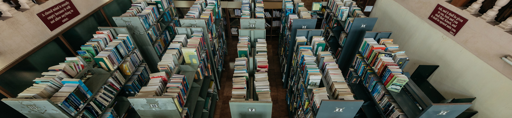

LIBRARY
- The library is fully automated using ‘KOHA’ , a web enabled open source library automation software.
- Barcode system is followed for transaction of books and other documents.
- The institute library has also developed a full-fledged Digital Library by installing 25 multimedia computer systems on LAN.
- A well furnished Audio/Visual centre provides all sorts of self study digital sources. The e-resources can be accessed across the Wi-Fi campus.
- Reprographic facility, Audio/Visual section, Literature books library, Video lectures of institute faculties are the special attraction.